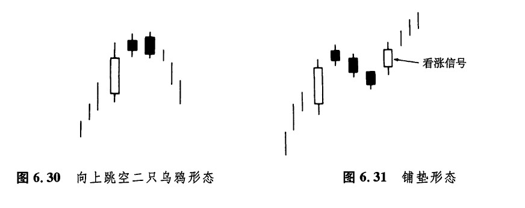
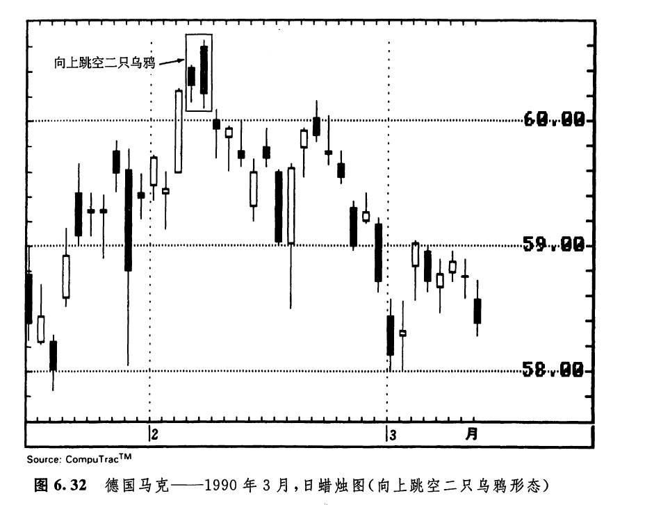
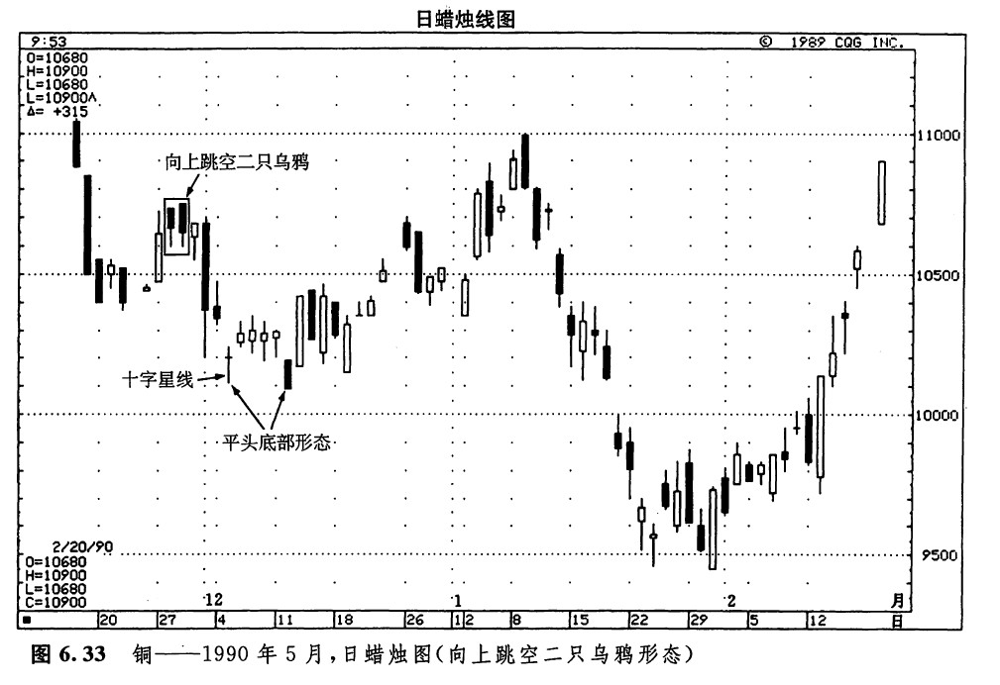

向上跳空二只乌鸦
如图6.30所示，为向上跳空二只乌鸦形态（瞧，这个名称多拗口）。“向上跳空”指的是图示的小黑色实体与它们之前的实体（即第一个小黑色实体之前的实体，通常是一根长长的白色实体）之间的价格跳空。在图示的形态中，两个黑色的小实体自然就是“两只乌鸦”。两个黑色的小实体好象是栖立在高高的树枝上的两只乌鸦，它们不祥地向下凝视着。从这个形象的比喻来看，显而易见，这是一种看跌的价格形态。在理想的向上跳空两只乌鸦形态中，第二个黑色实体的开市价高于第一个黑色实体的开市价，并且它的收市价低于第一个黑色实体的收市价。
这个形态在技术上看跌的理论依据大致如下：市场本来处于上升趋势中，并且这一天的开市价同前一天的收市价相比，是向上跳空的，可是市场不能维持这个新高水平，结果当天反而形成了一根黑色蜡烛线。到此时为止，牛方至少还能捞着几根救命稻草，因为这根黑色蜡烛线还能够维持在前一天的收市价之上。第三天的行情又为市场抹上了更深的疲软色彩：当天市场曾经再度创出新高，但是同样未能将这个新高水平维持到收市的时候。而且，更糟糕的是，第三日的收市价低于第二日的收市价。如果市场果真如此坚挺，那么，为什么它不能维持新高水平呢？为什么市场的收市价下降了呢？这时候，牛方心中恐怕正在情偏不安地盘算着这些问题。恩来想去，结论往往是，市场不如自己当初指望的那样坚挺。如果次日（也就是指第四天）市场还是不能拿下前面的制高点，那么，我们可以想见，将会出现更低的价格。

还有一种与向上跳空二只乌鸦有点瓜葛的蜡烛图形态，其外形与向上跳空二只乌鸦形态有一定程度的相似之处。但是，与向上跳空二只乌鸦形态不同的是，在上升行情中，这类形态是看涨的。正因为如此，它就成了为数不多的蜡烛图持续形态的一员（其他持续形态我们将在第七章中讨论）。这种形态称为铺垫形态（如图6.31所示）。铺垫形态发生在牛市行情中，是一种看涨的持续形态。在这个形态中，头三根蜡烛线与向上跳空二只乌鸦形态相似，但是此后，又跟了一根黑色蜡烛线。如果接下来的一根蜡烛线是白色的，并向上跳空，向上超过了上述最后一根黑色蜡烛线的上影线；或者这根白色蜡烛线的收市价高于最后一根黑色蜡烛线的最高价，则形成了买入信号。在铺垫形态中，可以有2根、3根乃至4根黑色蜡烛线。相对而言，向上跳空二只乌鸦形态和铺垫形态都是很少见的。
如图6.32所示，是一个典型的向上跳空二只乌鸦形态的实例。二月上旬，先是一根长长的白色蜡烛线，后面飞来二只乌鸦。本形态的出现，中止了从一个月之前开始的上涨行情。

图6.33所示为铜期货市场。我们可以看到，11月27日，铜市场以一根长长的白色蜡烛线推升了价格水平。在随后的两天中，市场均创出了新高，但都未能维持住。第二天的黑色蜡烛线终于完成了图示的向上跳空二只乌鸦形态。市场由此一路下滑，直到一个十字星线和一个平头底部形态出现才打住。后面这两个形态筑成了下一波上升行情的发射平台。

如图6.34所示，是罕见的铺垫形态的一个经典实例。在这个实例中，先是一根坚挺的白色蜡烛线，后面跟着一个向上跳空的黑色蜡烛线。接着，又出现了另外两根小的黑色蜡烛线。这群蜡烛线与最后的那根白色蜡烛线一起，构成了图示的铺垫形态。请注意，本形态同向上跳空二只乌鸦形态其实并没有太大的差别（前面我们曾经交代，在铺垫形态中，也可能仅仅出现两根小的黑色蜡烛线，而不是三根，如此一来，这类形态与向上跳空二只乌鸦形态就更没有什么两样了）。铺垫形态与向上跳空二只乌鸦形态主要的区别在于，在本形态最后，出现了一根白色的蜡烛线，使本形态摇身一变，成为一个看涨形态。根据以上分析，我向您建议，当向上跳空二只乌鸦形态出现后，应当在该形态的第二根黑色蜡烛线的最高点上方设置止损保护指令，以防备市场收市于该水平之上。

图6-34英镑——周蜡烛图（铺垫形态）
copyright @ 2018 制作：汉钛电线，Hingtak Wire & Cable LLC